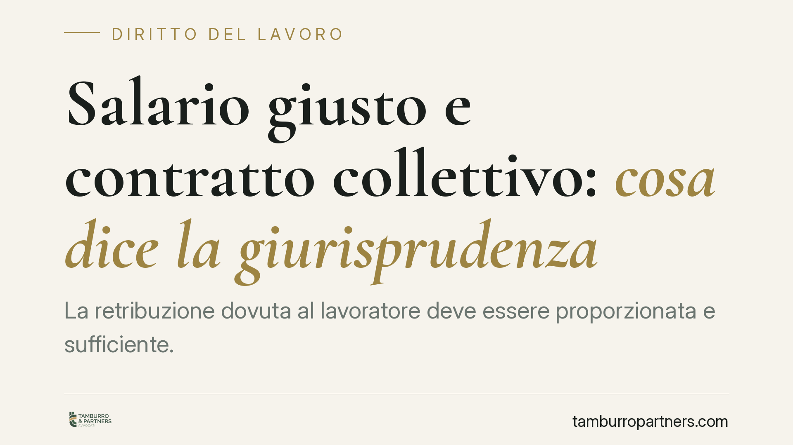

Salario giusto e contratto collettivo: cosa dice la giurisprudenza
La retribuzione dovuta al lavoratore deve essere proporzionata e sufficiente. Da tempo la giurisprudenza individua nel contratto collettivo nazionale il principale parametro di riferimento e censura la ricostruzione 'a spezzatino', cioè il mescolare voci retributive tratte da contratti diversi. Un orientamento che incide sui controlli ispettivi e sulla gestione del costo del lavoro in azienda.

Il fatto
Un tema ricorrente nel diritto del lavoro è l'individuazione del cosiddetto "salario giusto": quale sia, cioè, la retribuzione minima che deve essere corrisposta al lavoratore.
Secondo un orientamento consolidato, il contratto collettivo nazionale di lavoro (Ccnl) di categoria rappresenta il parametro privilegiato per stabilire se una retribuzione sia adeguata. In questa cornice si colloca anche il divieto di comporre il trattamento economico prendendo singole voci da Ccnl differenti — la cosiddetta ricostruzione "a spezzatino".
Una precisazione doverosa: non esiste, ad oggi, una norma nuova che trasformi il Ccnl in "parametro legale" con una decorrenza fissata. Il principio non nasce da una singola disposizione recente, ma dall'interpretazione dell'art. 36 della Costituzione. Chi legga notizie che citano decorrenze puntuali future o testi normativi specifici faccia attenzione: prima di adeguare le prassi aziendali occorre verificare l'esistenza e gli estremi esatti della fonte.
Inquadramento normativo
Il punto di partenza è l'art. 36, comma 1, della Costituzione: il lavoratore ha diritto a una retribuzione "proporzionata alla quantità e qualità del suo lavoro e in ogni caso sufficiente ad assicurare a sé e alla famiglia un'esistenza libera e dignitosa".
Si tratta di una norma immediatamente precettiva. Il giudice può applicarla direttamente e, per riempirla di contenuto, utilizza da tempo i minimi tabellari del Ccnl di categoria come termine di paragone. Se la retribuzione effettiva è inferiore a quei minimi, il datore può essere condannato a integrarla.
Da qui il divieto di ricostruzione "a spezzatino": la retribuzione va valutata nel suo complesso, prendendo a riferimento un contratto collettivo coerente con l'attività svolta, non assemblando arbitrariamente le voci più basse da fonti diverse.
Va tenuto distinto un concetto tecnico che spesso genera confusione: la congruità retributiva. Negli appalti — in particolare nell'edilizia — esiste il cosiddetto DURC di congruità (previsto dalla disciplina attuativa del D.L. 76/2020), che misura il rapporto tra il costo della manodopera dichiarato e il valore dell'opera. È un istituto diverso dal "salario giusto" ex art. 36 Cost.: riguarda l'incidenza minima del lavoro in un appalto, non l'adeguatezza della busta paga del singolo dipendente. Confondere i due piani porta a errori operativi.
Implicazioni pratiche
Per l'azienda che applica un Ccnl coerente con la propria attività, l'impatto è contenuto. Il rischio si concentra su chi:
- applica contratti collettivi "non rappresentativi" o distanti dall'attività effettivamente svolta;
- costruisce trattamenti retributivi combinando voci prese da contratti diversi;
- opera in appalti soggetti alla verifica di congruità della manodopera.
In sede di contenzioso, il lavoratore può chiedere l'adeguamento ai minimi del Ccnl di riferimento, con arretrati e relative differenze contributive. In sede ispettiva, l'inquadramento contrattuale e la coerenza delle voci retributive sono tra i primi elementi verificati.
Cosa fare in concreto
- Verificare il Ccnl applicato: controllare che sia coerente con l'attività effettivamente svolta e sottoscritto da organizzazioni comparativamente più rappresentative.
- Rivedere la struttura della busta paga: accertare che le voci retributive derivino da un unico contratto coerente, evitando composizioni "a spezzatino".
- Confrontare le retribuzioni con i minimi tabellari aggiornati del Ccnl di categoria, per intercettare eventuali scostamenti.
- Negli appalti, presidiare la congruità della manodopera: monitorare il DURC di congruità dove richiesto, tenendolo distinto dalla verifica dei minimi individuali.
- Documentare le scelte di inquadramento: conservare le motivazioni della classificazione contrattuale, utili in caso di controllo o contenzioso.
Conclusione
Il principio è solido a prescindere da singole novità normative: la retribuzione adeguata si misura sul contratto collettivo di categoria, letto nel suo complesso e coerente con l'attività svolta. Le aziende hanno interesse a un controllo periodico dell'inquadramento e delle voci retributive. Sulle notizie che annunciano nuove norme con decorrenze precise, invece, la prudenza impone di verificare gli estremi della fonte prima di modificare le prassi.
Ogni storia di lavoro ha i suoi tempi.
Se gestisci HR e vuoi un confronto su contenzioso, ispezioni o licenziamenti, scrivi allo studio. Ti rispondiamo entro un giorno lavorativo.